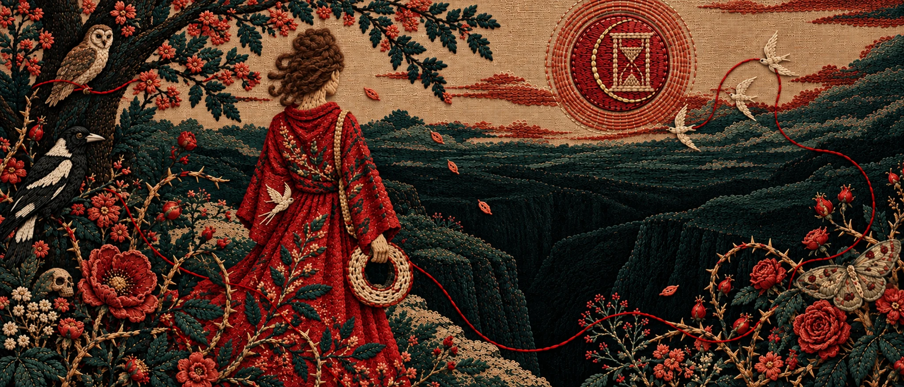
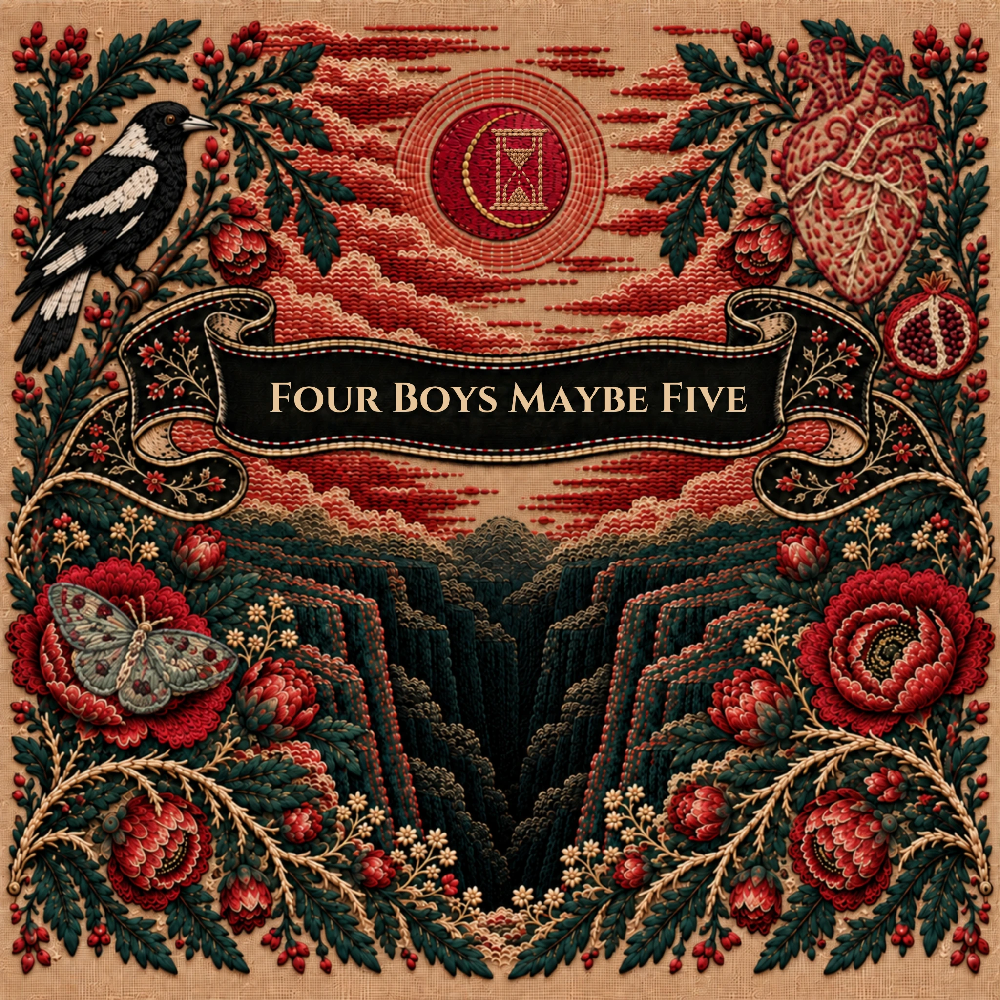

Shira Z. Carmel and her Brasserie
Horn-driven songs for an eight-piece ensemble.
Watch the Brasserie ↗︎
Composer * Singer * Songwriter
Songs made of poetry, wondering and wandering.
Listen to the new single Join the mailing listShira Z. Carmel is a composer, singer and songwriter from Jerusalem, now based in Melbourne/Naarm. Over two decades, her music has travelled through various ensembles and international tours, and into film, television, radio and interdisciplinary art. Moving between alternative pop, jazz, neo-soul, cabaret, folk and experimental song, she writes contemplative lyrics of her own and sets poetry to music in Hebrew, English and Yiddish.
“Carmel’s quartet hovers somewhere in the middle of a dodecahedron, whose faces include TOM WAITS (in terms of presentation), HAVA ALBERSTEIN (in terms of vocal intensity and folkish nuances), FREDERICK CHOPIN (in terms of musical mystery), KURT WEILL (in terms of elegant grit), THE SOFT MACHINE (in terms of jazzy texture), JOLIE HOLLAND (in terms of folk-meeting-jazz and of hauntingness), REGINA SPECTOR (in terms of playfulness) and, say, THE PIXIES (in terms of rock-age liberty), but that would be to say nothing about it.”
Yuval Ben-Ami, +972 Magazine ↗︎
Read the full bio in the EPKA poem by Tal Nitzán · Set to music by Shira Z. Carmel

A stark chamber song about motherhood, moral responsibility, and violence as a double-edged sword. Voice, cello, baritone saxophone, and piano leave the poem exposed.
Read the Poem
Tap the card to change perspectives
A life in song, across genres and languages
Horn-driven songs for an eight-piece ensemble.
Watch the Brasserie ↗︎A song project about motherhood, told in Hebrew.
Listen to the playlist ↗︎
Vocal trio · founding member, songwriter and co-arranger · international touring.
Listen on Spotify ↗︎

Original songs moving between jazz, alternative pop and cabaret.
Listen on Spotify ↗︎
Contact
Stay close
to the Thread
Find, ask, get in touch, get together.
Stay in touch
Join the mailing list
New music, live dates and occasional (very few!) notes from me.